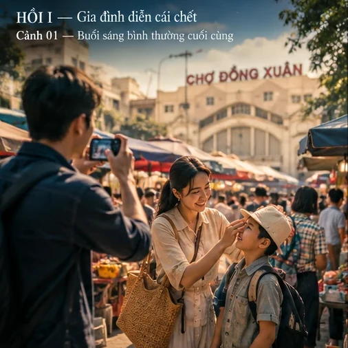
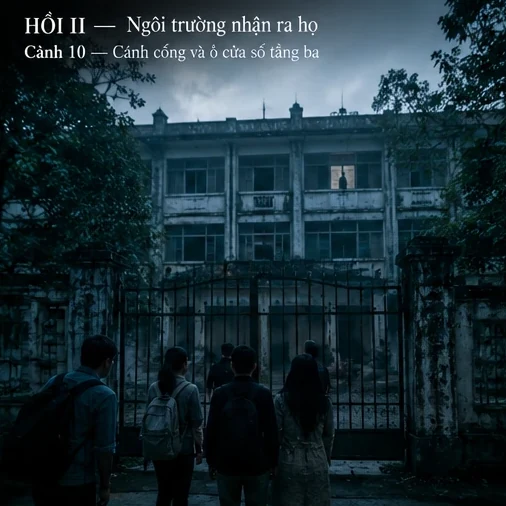
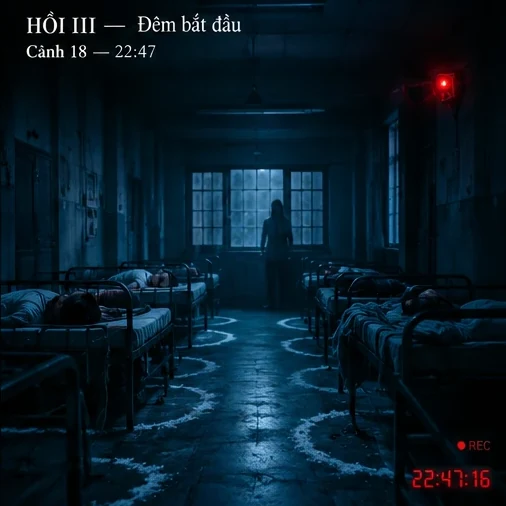
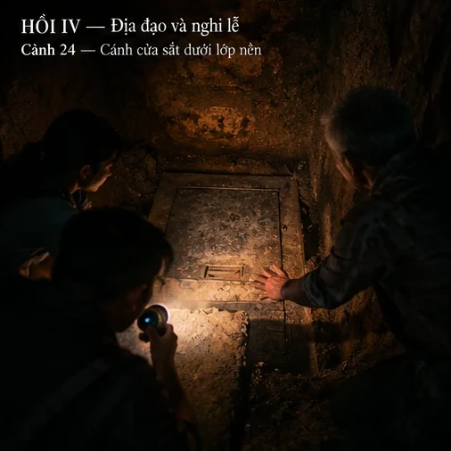
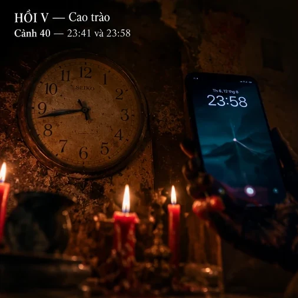
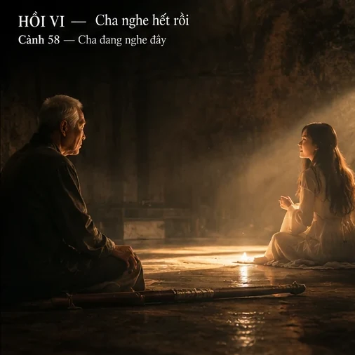

Một gia đình nghệ sĩ nhận quay reality tâm linh trong ngôi trường nghệ thuật bỏ hoang 21 năm. Trong đêm duy nhất ấy, một nghi lễ còn dang dở bắt đầu lại — và người bảo vệ ngôi trường đã chờ họ rất lâu.
Truyện mở bằng một cú lừa rất giỏi: thảm họa vỡ đê ở chợ Đồng Xuân, cây cầu Chương Dương sập, hai anh em Quang–Phong rơi xuống dòng nước — rồi BỐP, đó chỉ là phim trường quảng cáo lẩu. Gia đình nghệ sĩ bảy người diễn cảnh chết rất thật, xong ngồi ăn ngay giữa đống đổ nát. Ba tháng sau, Phong — người anh đang gánh nợ cờ bạc và bị ai đó nhắn tin đe dọa — kéo cả nhà nhận một job reality: ngủ một đêm trong trường nghệ thuật bỏ hoang, nơi 21 năm trước có học sinh mất tích và trường phải đóng cửa.
Trước cổng trường, một lão đạo sĩ xuất hiện, cảnh báo đừng ngủ lại. Ông không đi trừ tà — ông đi tìm con gái mất tích 21 năm. Quang, người duy nhất cảm nhận được sự bất thường, mời ông vào quay cùng. Đêm đó, trong phòng ký túc xá, vòng muối quanh Trang bị phá; linh hồn cô gái năm xưa nhập vào Trang, cất tiếng hát, làm cả nhà bất động — rồi linh hồn Trang bế Bon xuyên qua tường mà đi.
Từ đó là hành trình xuống địa đạo dưới nền trường: một mảnh hồn đen dẫn đường bằng ký ức, một phòng nghi lễ với vòng tròn ký hiệu và máu khô, và sự thật dần lộ ra — nghi lễ năm xưa chưa bao giờ kết thúc. Kẻ thực hiện nó chính là người bảo vệ: 21 năm trước hắn là người yêu của cô gái, đã lừa cô làm nghi lễ đổi vận để thành sao, hiến một đứa trẻ. Cô gái biết sự thật, tự sát, và cái chết đó làm nghi lễ phản lại hắn. Từ đó hắn phải tiếp tục giết để giữ mạng, và hắn cần đúng một người "cùng mệnh" với cô gái: Trang.
Cao trào: hắn vẽ lại vòng máu bằng máu cổ tay Trang, đúng 00:00. Nhưng hắn đã tính sai một thứ — thời gian: đồng hồ cổ dưới địa đạo lệch 17 phút so với đồng hồ của cả đoàn. Ở phần kết còn lại, người bảo vệ bị bắt, cô gái cuối cùng cũng hát trọn bài cho cha nghe, và lão đạo sĩ ra đi ngay sau khi nói "cha nghe hết rồi". Cảnh cuối: ba ngôi mộ — cô gái, đứa trẻ, và người cha.
Xếp theo mức đóng góp vào phim
Xếp theo mức thiệt hại nếu để nguyên
| Nhân vật | Chức năng | Look | Thoại |
|---|---|---|---|
| QUANG | POV. Người duy nhất cảm nhận được | Nam ~30, mặt hiền cởi mở, sơ mi trơn xanh nhạt, tóc ngắn, luôn cầm điện thoại | 179 |
| LÃO ĐẠO SĨ | Trái tim phim. Người cha đến muộn | Nam ~72, gầy, áo vải nâu sẫm, quần rộng, túi vải bạc màu, kiếm gỗ đào sẫm có nét chữ đỏ đã phai | 166 |
| BẢO VỆ | Phản diện. Kẻ sợ chết | Nam ~52, gầy, da sạm, đồng phục bảo vệ cũ bạc, mặt gần như không biểu cảm | 71 |
| PHONG | Cửa cho tai họa đi vào nhà | Nam ~35, vai rộng hơn Quang, mắt trũng vì mất ngủ, áo khoác tối màu | 55 |
| DUYÊN | Người mẹ. Động lực khẩn cấp | Nữ ~33, tóc buộc gọn, áo len mỏng, vợ Phong | 30 |
| TRANG | Vật chứa. Có agency từ cảnh 48 | Nữ ~27, cao, tóc dài đen buông hai vai, quen ống kính; khi bị nhập: mắt trắng dã không đồng tử | 26 |
| CÔ GÁI (linh hồn) | Nạn nhân gốc, con gái đạo sĩ | Nữ ~20, tóc dài, váy trắng đơn giản, mặt đầy nước mắt — phải giống Trang một cách bất an | 7 |
| BON | Phần cuối của nghi lễ | Bé trai 2 tuổi, má tròn, mũ vải nhỏ, áo kẻ | 16 |
| NHUNG · CHA · MẸ | Cần được giao việc (xem review) | Nữ ~28 / vợ chồng ~60 | 6·9·2 |
| PRODUCER | Giọng của guồng máy sản xuất | Nam ~35, sơ mi gọn, tai nghe, bộ đàm, laptop | 31 |
Cấu trúc 53 cảnh chia thành sáu hồi. Mỗi title card là khung hình mở đầu của hồi đó.

Hồi I · Cảnh 01–09Hai lần lừa khán giả: thảm họa hóa ra là quảng cáo, và job này hóa ra là một cái bẫy.

Hồi II · Cảnh 10–17Ánh sáng cạn dần. Ai cũng vui, trừ Quang và người bảo vệ.

Hồi III · Cảnh 18–23Vòng muối bị phá. Từ đây không còn chế độ sản xuất.

Hồi IV · Cảnh 24–39Mảnh hồn dẫn đường bằng ký ức, và đối thủ hóa ra là người sống.

Hồi V · Cảnh 40–49Đối đầu, tiết lộ, và một cú tính sai về thời gian.

Hồi VI · Cảnh 58–61Phim không đóng bằng thắng trận, mà bằng một bài hát được nghe trọn.